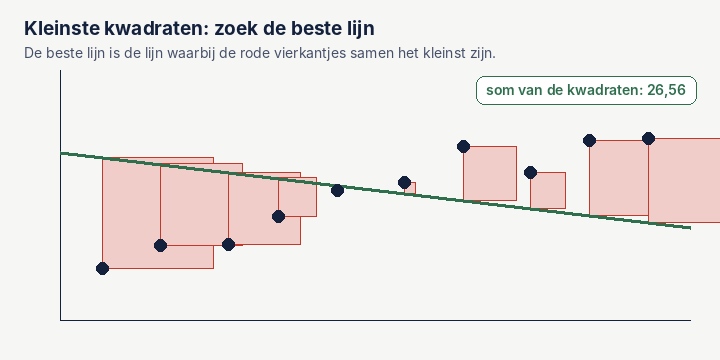

Numerieke analyse in de geomatica, simpel uitgelegd
Een computer kan niet exact rekenen. Hij rondt af, benadert en probeert. Numerieke analyse is het vak dat uitzoekt hoe je met die benaderingen toch betrouwbare antwoorden krijgt, en hoe groot de fout is. In de geomatica kom je het overal tegen: van coördinaten opslaan tot een netwerk vereffenen of een volume berekenen.
Ik kreeg dit vak tijdens mijn studie Geomatics Engineering. Hieronder de onderwerpen die ik in de praktijk het vaakst terugzie, elk met een voorbeeld om zelf te proberen.
1. Afronden: waarom je coördinaten centimeters kwijt kunnen raken
Een computer bewaart een kommagetal met een vast aantal cijfers. Bij het veelgebruikte 32-bits formaat (float32) zijn dat er ongeveer zeven. Voor een getal als 1,234567 is dat ruim genoeg. Maar een RD-coördinaat als 557460,456 heeft al zes cijfers vóór de komma. Dan blijft er bijna niets over voor de millimeters.
| Ingevoerd | Opgeslagen als float32 | Verschil | Kleinste stap |
|---|
Bij de Y-coördinaat ben je zo bijna 2 centimeter kwijt, alleen door het opslaan. De kleinste stap die float32 daar nog kan maken, is ruim 6 centimeter. Daarom slaat het LAS-formaat voor puntenwolken coördinaten op als gehele getallen, met een schaalfactor en een verschuiving in de kop van het bestand. En daarom trekken veel programma's eerst een vaste waarde van je coördinaten af voordat ze gaan rekenen.
2. Foutvoortplanting: hoe meetfouten doorwerken
Elke meting heeft een onzekerheid. Reken je ermee verder, dan neemt de uitkomst die onzekerheid mee. Een total station meet een afstand en een hoek. Een fout in de afstand schuift het punt in de kijkrichting, een fout in de hoek schuift het punt opzij. En die laatste wordt groter naarmate het punt verder weg ligt.
De regel daarachter heet de wet van foutvoortplanting. Opzij geldt: fout = afstand × hoekfout (in radialen). Bij 1 mgon op 100 meter is dat 1,6 mm. Daarom zet je een total station liever dicht bij de punten die het nauwkeurigst moeten.
3. Kleinste kwadraten: het hart van het vereffenen
Landmeters meten bewust meer dan strikt nodig is. Dat geeft controle, maar ook een probleem: de metingen spreken elkaar altijd een beetje tegen. Welke uitkomst is dan de beste? Het antwoord dat Gauss en Legendre rond 1800 gaven: kies de oplossing waarbij de som van de kwadraten van alle afwijkingen het kleinst is.

Bij het vereffenen van een meetnet of een waterpassing gebeurt precies hetzelfde, alleen met veel meer onbekenden tegelijk. Maar kleinste kwadraten heeft een zwakke plek: één grove meetfout trekt de hele oplossing scheef. Probeer het hieronder.
Kwadrateren maakt grote afwijkingen extra zwaar: een fout van 10 telt honderd keer zo zwaar als een fout van 1. Daarom kijk je na een vereffening altijd naar de grootste afwijkingen en test je op grove fouten. In Nederland gebeurt dat volgens de Delftse methode van Baarda, met toetsen die per meting laten zien of hij verdacht is.
4. Interpoleren: hoogtes tussen de meetpunten
Je meet hoogtes op losse punten, maar je wilt een doorlopend terreinmodel. Dan moet je ertussen schatten: interpoleren. De simpelste manier is een rechte lijn tussen twee buurpunten, of in 2D een driehoek tussen drie punten (een TIN). Dat lijkt grof, maar is vaak verrassend goed.
De verleiding is om één vloeiende formule door alle punten te leggen. Hieronder zie je waarom dat gevaarlijk is.
De rode lijn gaat keurig door elk meetpunt, maar schiet aan de randen alle kanten op. Dat heet het verschijnsel van Runge. In een terreinmodel betekent het heuvels en kuilen die er niet zijn. De les: kies een methode die alleen naar de buren kijkt, zoals lineaire interpolatie, een TIN, inverse afstandsweging of kriging.
5. Iteratief oplossen: steeds een beetje beter
Sommige vergelijkingen kun je niet in één keer oplossen. Dan gok je, kijkt hoe ver je ernaast zit, en verbetert je gok. De bekendste methode is die van Newton: je trekt een raaklijn aan de kromme en kijkt waar die de nul raakt. Dat punt is je nieuwe gok.
Een GNSS-ontvanger doet dit elke seconde. De afstanden tot de satellieten hangen niet-lineair af van je positie, dus de ontvanger begint met een ruwe gok en verbetert die een paar keer tot de positie niet meer verandert. Hieronder het principe met een simpel voorbeeld: de wortel uit 2 zoeken.
Na drie stappen klopt de schatting al tot op vijf decimalen. Dat is de kracht van Newton: het aantal goede cijfers verdubbelt ongeveer bij elke stap, zolang je eerste gok niet te ver weg ligt.
6. Numeriek integreren: volumes berekenen
Bij grondwerk wil je weten hoeveel kuub er weg moet. De vorm van het terrein is geen nette formule, dus je benadert het: je knipt het op in stukjes en telt die op. Bij de trapeziumregel verbind je de gemeten punten met rechte lijnen. Hoe meer stukjes, hoe kleiner de fout.
Dezelfde gedachte zit achter de methode van gemiddelde eindoppervlakten in grondwerk: je meet dwarsprofielen, berekent hun oppervlakte en vermenigvuldigt het gemiddelde van twee buren met de afstand ertussen. Software als Civil 3D doet het met driehoeken tussen twee terreinmodellen, maar het principe is gelijk: kleine stukjes optellen.
Wat ik eruit meeneem
- Elke uitkomst is een benadering. De vraag is niet óf er een fout in zit, maar hoe groot.
- Kijk naar je getallen voordat je rekent. Grote coördinaten in float32, een tijdkolom die terugspringt: kleine dingen met grote gevolgen.
- Meet overtallig en vereffen, maar controleer altijd de grootste afwijkingen. Kleinste kwadraten verbergt een grove fout niet, hij smeert hem uit.
- Simpel is vaak beter: rechte lijnen tussen buurpunten zijn betrouwbaarder dan één ingewikkelde formule door alles heen.
Om verder te lezen: Charles D. Ghilani, Adjustment Computations: Spatial Data Analysis (Wiley); Richard L. Burden en J. Douglas Faires, Numerical Analysis; W. Baarda, A Testing Procedure for Use in Geodetic Networks (Nederlandse Commissie voor Geodesie, 1968). De gif en voorbeelden zijn van mij.